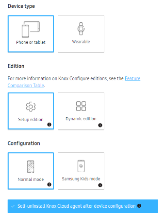

Knox Configure 21.09 release notes
Last updated July 26th, 2023
IT admin can select an option to self-uninstall Knox Configure agent after device configuration
When creating or setting up profiles in Setup edition of Knox Configure (KC), IT admins can choose to set a self-uninstall flag that allows the KC agent to automatically uninstall after profile configuration is complete. The user can specify whether this functionality is available on the device when they are setting up or modifying the profile. This feature primarily helps B2B2C partners who are not interested in giving a full set of permissions for their minimal use-cases such as rebranding or minor configuration changes. The process works as follows:
- On the KC console, when setting up a new profile, the IT admin selects the Self-uninstall checkbox. If this option is selected, the KC console only shows reduced options in the console.
- Depending upon the options selected, KC applies the device configuration to the target device.
- Upon successful implementation of the device configuration, the KC agent is automatically uninstalled.
- For devices that require a factory reset as part of device configuration prior to the license expiration, the KC agent uninstalls itself after the device resets and successfully includes the device configuration options.

IT admin can set Knox Configure Routines to support context-based configuration
Knox Configure now supports adding routine applets. This involves codeless automation for use cases that allow the programming of a response to events based on various factors. These routine applets are features powered by the concept of automated actions triggered by context, to make device usage more streamlined. The automated response actions are triggered by context clues such as time, battery level, and charging status. Simply put, B2B enterprises use many device management solutions to configure static device settings using cloud based platform for their employees or target devices. Also, for B2B2C cases where the end customer receives the device use just simple app deployment/layout configuration. This static configuration has no flexibility around the device context. Now, Knox Configure supports trigger (If) and action (Then) conditions like below table.
If: what will trigger this routine.
Then: what this routine will do.
|
Trigger (If) |
Action (Then) |
||
|---|---|---|---|
|
Condition |
Value |
Condition |
Value |
|
Time period |
Start time/End time |
Bluetooth |
On/Off |
|
Specific time |
HH/MM/AM or PM |
Mobile hotspot |
On/Off |
|
Charging status |
Charging/ Not charging |
NFC (Only NFC Standard mode supported) |
On/Off |
|
Battery level |
Level(<=15%) |
Wi-Fi |
On/Off |
|
- |
- |
Sounds and vibration |
Sound/Vibrate/Mute |
|
- |
- |
Location |
On/Off |
|
- |
- |
Power saving mode |
On/Off |
|
- |
- |
Open an app |
Package name |
IT admins can customize routine applets to add/mix trigger and action conditions. After routine applets end, the device’s condition will be reversed.
End user can enter ProKiosk mode from KC Settings
This release introduces the ability to set multiple applications in the KC ProKiosk Mode with an added functionality to enter and re-enter the ProKiosk mode quickly by entering a passcode on the device. Device users who have exited the ProKiosk mode can now quickly re-enter that mode by entering a specific passcode on their device. This feature reduces the dependence on the IT admin pushing an update to the device to restart the ProKiosk mode.
IT admins can set this passcode during the profile creation process, specifically in the Home and Lock screen settings for entering into the ProKiosk Mode. To re-enter the ProKiosk mode, the device user goes to the Knox Configure Settings screen, and when prompted enters the passcode to re-enter ProKiosk Mode.
IT admin can remap side key
Starting with this release, IT admins can remap the side key to custom functionality for Knox 3.7 and above. The options available for this custom remapping are as follows:
- Double-press of the side key - IT admins can choose to allow or restrict the device user from double-pressing the appropriate key. IT admins can turn this setting on or off.
- Turn on or off
- Quick launch camera
- Open Bixby
- Open specific app
- Press and hold of the side key
- Wake Bixby
- Power off menu
- Allow user to customize - IT admins can choose one of three settings:
- Allow the device user to customize the action
- Do not allow the device user to customize the action
- Do not allow the device user to customize the action as well as hide the setting from the use
KC blocks OS FOTA upgrade before KC agent enrollment
Previously, when setting up new devices after the OOBE setup wizard, sometimes device users could manually download and install firmware updates (FOTA) to their devices before the device was enrolled using the KC agent. These FOTA updates were often not mandated by their IT admin and it causes an issue where the partner app doesn’t work due to an OS mismatch.
Going forward, IT admins can set a FOTA block for devices so that even if the device user tries to manually update the device’s firmware, it is blocked on the device. Only after the new device is enrolled in Knox Configure, KC will decide to permit the appropriate FOTA update to the device or not based on FOTA block option. If IT admin sets the FOTA block on, then KC will block FOTA updates. If not, KC won’t block it and the end user can select whether to accept the FOTA update or not. This restriction negates the chances of an OS mismatch on the device and ensures that all partner apps remain functional.
IT admin can select the option to disable firmware updates from download mode
For devices running Knox 3.4 or higher and the Samsung SM-T295 device, IT admins can prevent the device user from updating the firmware of the device in download mode.
Location of contents download folder is changed from S OS
With the Android S OS, apps are restricted from creating new folders under directly under Root. Bearing this restriction in mind, Knox Cloud Services folder creation is now changed. The previous file location was /storage/emulated/0/Contents and it has now changed to /storage/emulated/0/Download/Contents.
Device Sync for various Knox services
When registering devices to a customer from the Reseller Portal (RP), resellers cannot specify the Knox services attached to the customer account since the purpose of this registration is only to prove ownership of devices. So, when a customer subscribes to a service, all devices registered from the RP are automatically synced to the registered services. This automatic sync results in all devices, even devices not currently in use, are uploaded to the services resulting in massive data usage. This release introduces a new feature where users can manually sync devices with the appropriate Knox. The new process works as follows:
-
The user registers for KCS services using the unified Knox Admin Portal, but the devices from the Reseller Portal are not synced automatically.
-
When the IT admin first logs in to the unified Knox Admin Portal, a Select Services page shows. The user can select the appropriate service from this location.
Note
Once set up, the IT admin can choose to add or remove services using the User Profile or Avatar screen > Manage Services and Preferences > Show/Hide Service buttons.
-
After selecting all services, the user clicks Confirm. The user must select at least one service; without which they cannot proceed to the next step.
-
After confirmation, the device sync notification shows and the added services show on the left-hand navigation menu.
-
Once the device information is synced, hiding the added services does not remove the devices information from the database. If the user were to add the service again, all information synced previously is still visible. If the user adds a new service that was never added, device sync will start.
Note
If a device sync is not successful, contact Samsung Support to troubleshoot the issue.
Consolidate notification emails across services
Previously, when users signed up for multiple Knox services from the unified Knox Admin Portal, they received multiple notification emails. Going forward, notification emails for registration, approval, and rejection of requests from the unified Knox Admin Portal are sent in a single notification email. Going forward, users can only receive notification emails from services that are set to show on the left navigation pane. This change applies to all Knox services, namely: Knox Portal, Knox Configure, Knox Mobile Enrollment, Knox E-FOTA, Samsung Care+ for Business, Knox Asset Intelligence, and Knox Manage.
Notify users of errors when special characters are used in Bulk invites
When IT admins try to set up bulk invites using a CSV file for users in the unified Knox Admin Portal, first and last name fields cannot use the following 10 special characters: = + @ < > { } ( ).
Until the previous release, when these characters were used for first or last name fields, the process failed without any notifications given to the IT admin. Going forward, whenever these special characters are used, the console notifies the IT admin through an error log. This improvement allows IT admins to correct these errors and ensure the bulk invite process is successful.
On this page
Is this page helpful?